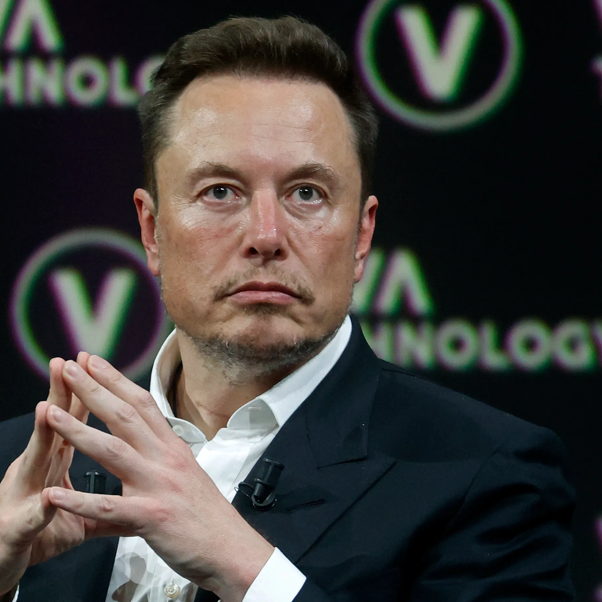

Elon Reeve Musk
Elon Reeve Musk (born June 28, 1971) is a businessman and investor known for his key roles in space company SpaceX and automotive company Tesla, Inc. Other involvements include ownership of X Corp., formerly Twitter, and his role in the founding of The Boring Company, xAI, Neuralink and OpenAI. He is one of the wealthiest people in the world; as of June 2024, Forbes estimates his net worth to be US$210 billion.[4] A member of the wealthy South African Musk family, Musk was born in Pretoria and briefly attended the University of Pretoria before immigrating to Canada at age 18, acquiring citizenship through his Canadian-born mother. Two years later, he matriculated at Queen's University at Kingston in Canada. Musk later transferred to the University of Pennsylvania and received bachelor's degrees in economics and physics. He moved to California in 1995 to attend Stanford University, but dropped out after two days and, with his brother Kimbal, co-founded online city guide software company Zip2. The startup was acquired by Compaq for $307 million in 1999. That same year, Musk co-founded X.com, a direct bank. X.com merged with Confinity in 2000 to form PayPal. In October 2002, eBay acquired PayPal for $1.5 billion. Using $100 million of the money he made from the sale of PayPal, Musk founded SpaceX, a spaceflight services company, in 2002. In 2004, Musk became an early investor in electric vehicle manufacturer Tesla Motors, Inc. (later Tesla, Inc.). He became the company's chairman and product architect, assuming the position of CEO in 2008. In 2006, Musk helped create SolarCity, a solar-energy company that was acquired by Tesla in 2016 and became Tesla Energy. In 2013, he proposed a hyperloop high-speed vactrain transportation system. In 2015, he co-founded OpenAI, a nonprofit artificial intelligence research company. The following year, Musk co-founded Neuralink—a neurotechnology company developing brain–computer interfaces—and the Boring Company, a tunnel construction company. In 2018, the U.S. Securities and Exchange Commission (SEC) sued Musk, alleging that he had falsely announced that he had secured funding for a private takeover of Tesla. To settle the case, Musk stepped down as the chairman of Tesla and paid a $20 million fine. In 2022, he acquired Twitter for $44 billion. He subsequently merged the company into newly created X Corp. and rebranded the service as X the following year. In March 2023, Musk founded xAI, an artificial intelligence company. Musk has expressed views that have made him a polarizing figure.[5] He has been criticized for making unscientific and misleading statements, including COVID-19 misinformation and antisemitic conspiracy theories.[5][6][7][8] His ownership of Twitter has been similarly controversial, being marked by layoffs of large numbers of employees, an increase in hate speech, misinformation and disinformation on the website, and changes to Twitter Blue verification.